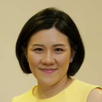

Dr Wong Chiung Ing
Senior Consultant Medical Oncology Parkway Cancer Centre
Dr Wong Chiung Ing is a Senior Consultant specialising in Medical Oncology at Parkway Cancer Centre. She received her Bachelor of Medicine, Bachelor of Surgery (MB ChB) degree from the University of Manchester in the United Kingdom, and completed her post-graduate training in Internal Medicine at various teaching hospitals in England, culminating in Membership to the Royal College of Physicians of the United Kingdom (MRCP UK).
For more information about Dr Wong Chiung Ing.